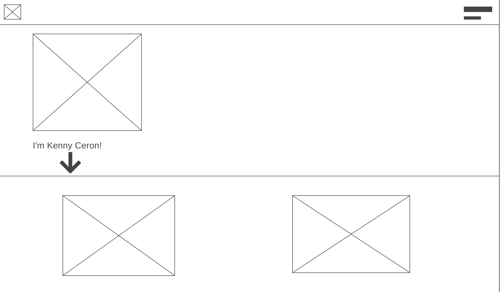
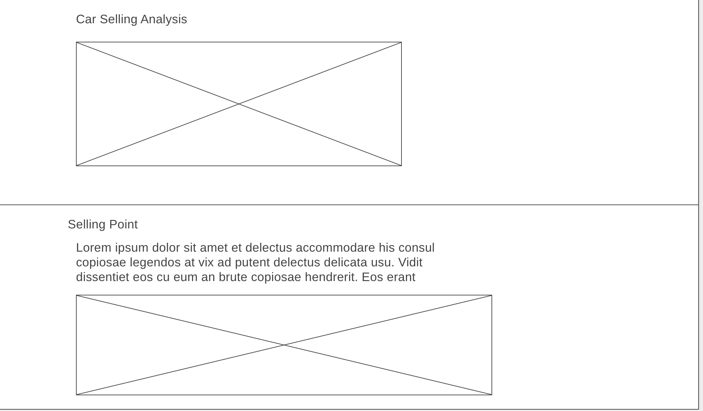
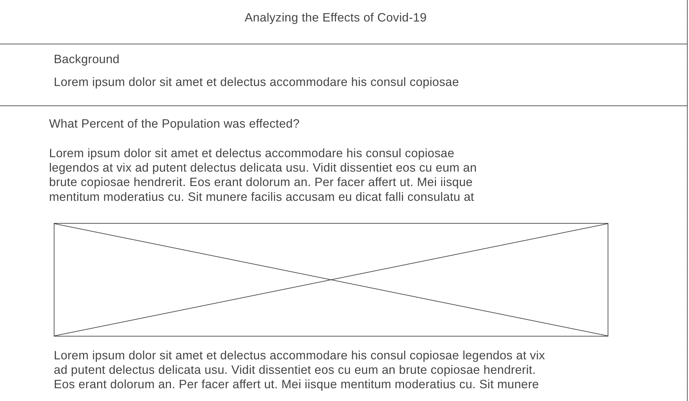

Overview
Purpose
The purpose of my website is to efficiently demonstrate my programming abilities by linking my previous projects on this site.
Audience
The intended audience are potential employers and teachers for them to learn and understand more about my analytical experience
Branding
Website Logo

Style Guide
Color Palette
Palette URL: https://coolors.co/palette/bee9e8-62b6cb-1b4965-cae9ff-5fa8d3| Primary | Secondary | Accent 1 | Accent 2 |
|---|---|---|---|
| #BEE9E8 | #62B6CB | #1B4965 |
Typography
Heading Font: Roboto
Paragraph Font: Montserrat
Normal paragraph example
Thank you for visiting my personal consulting analysis website! Here you will find some of the projects that I've worked on throughout my academic career that showcase my skills in programming, data analysis, and data wrangling & visualization.
Colored paragraph example
Thank you for visiting my personal consulting analysis website! Here you will find some of the projects that I've worked on throughout my academic career that showcase my skills in programming, data analysis, and data wrangling & visualization.
Navigation
Site Map
Content
Home page
Hey! I'm Kenny Ceron and I have a passion for statistical analysis and programming! I'm currently studying at BYU-Idaho.
Images for the Home page
Car Price Analysis
The car being researched is a 2019 Toyota Corolla SE. It was initially bought in 2020 for $20,000 with 18,000 miles previously driven. This is the point marked in blue. I plan to sell my car at 125,000 miles. At this point in the regression, it is estimated to be sold at a price of $12,465, which is shown in green.
Images for the Page 2
Covid Analysis
In recent years, COVID-19 brought upon a pandemic as it impacted every nation around the globe. It has redefined living standards that we know of today such as national economies, social norms, and especially the health and loss of several citizens of each nation. The impact of the cases, deaths, and overall percent of the population impacted will be values accounted for in the following analysis.
Images for the Page 3
Wireframes
Create three wireframes for your site. One for each page and list them here
Home
This is where the links to other analyses are hosted as well as links to my platforms, skills, and resume.
Car Selling Price Analysis
The analysis is focused on the statistical analysis so the images will not look as appealing, however the value is in the infromation interpreted.
Covid Analysis
There are additional visualizations and paragraphs in the html file however it is similarly repetitive in this format
